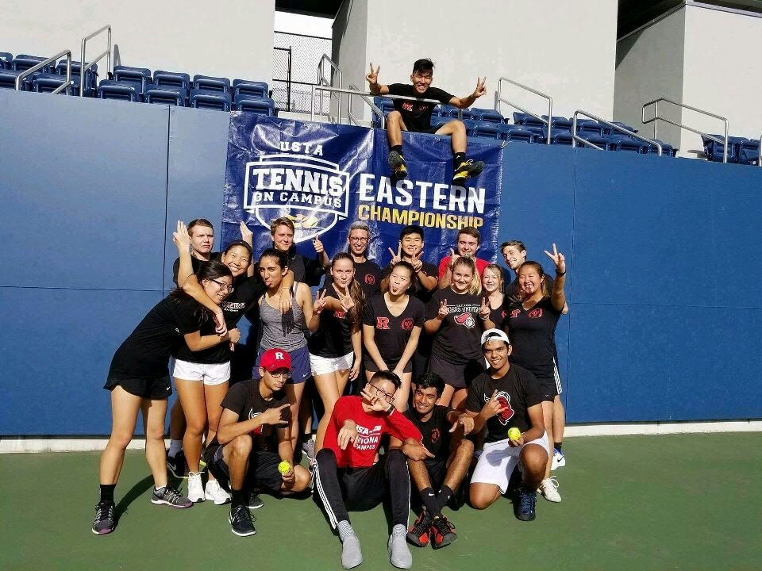
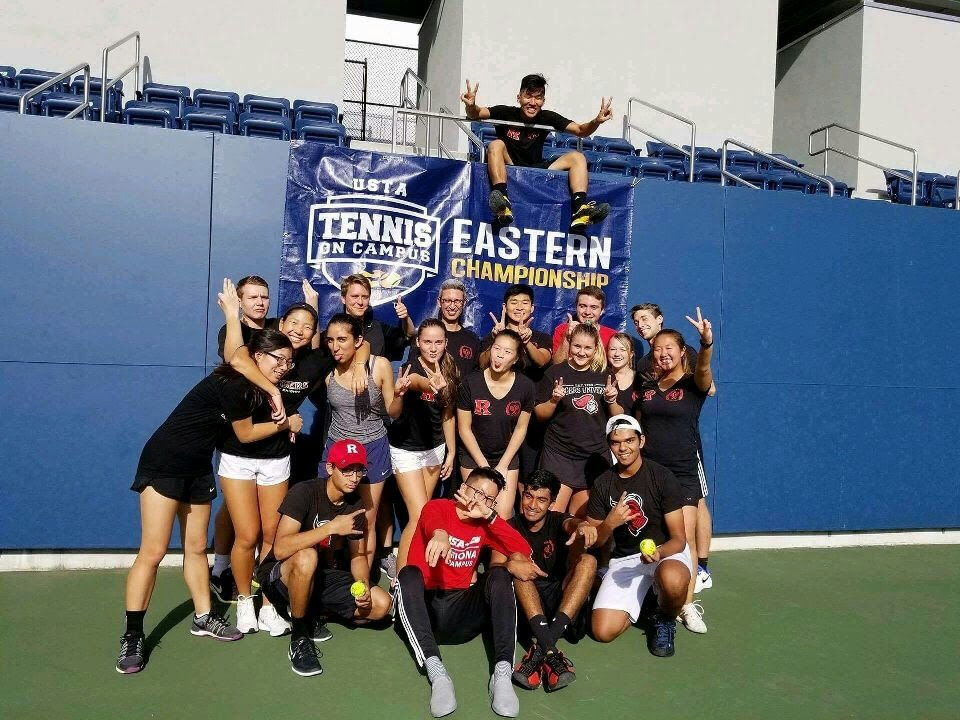
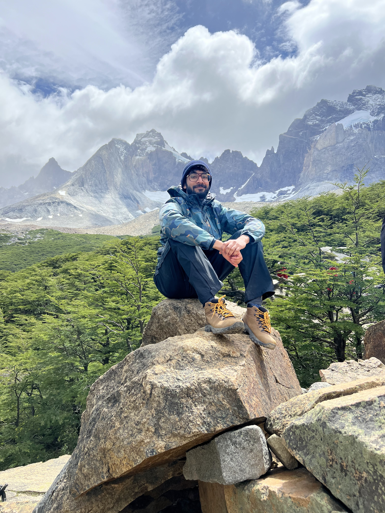
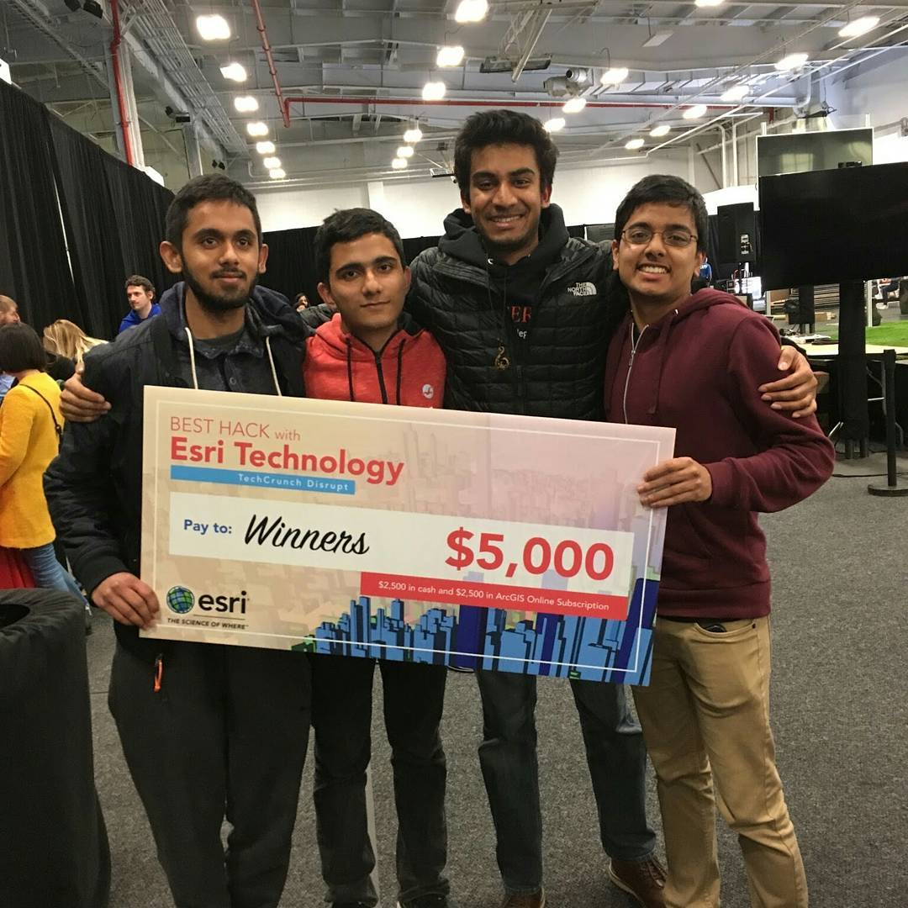

Tennis
I love to play tennis and hit the courts 2-3 times a week. Catch me at the US Open every year!
Who is Revanth?
I'm a full-stack engineer with 5 years of experience ranging from big tech (Amazon) to start-ups (NextPatient). At Rutgers University, I studied computer science and cognitive science on a full-ride presidential scholarship (top 0.5% of my class).
At Amazon, I worked on AI teams like Translate and Comprehend Medical, where I got hooked on NLP and saw the massive potential of AI in healthcare. Since then, I've been obsessed with building agentic workflows—AI systems that don't just analyze but act—to cut through the red tape and actually make care delivery better.
I'm currently technical lead at NextPatient. Under my tenure, we have grown from our revenue 100% to over 10M in ARR.
I am also exploring founder paths in healthcare AI, focused on building tools that work smarter, not just faster.
I love to play tennis and hit the courts 2-3 times a week. Catch me at the US Open every year!
Though very much an amateur, I love to fly drones and take videos of my travels. Send me any editing tips!
I have volunteered at various non-profits, including DataKind, where I helped develop data-driven solutions for social problems.
Whether it's scuba diving in the Galapagos or hiking Machu Pichu, I love to try different cuisines, meet new people, and explore new places.
I have participated in various hackathons, including the Techcrunch disrupt, where my team won the grand prize of $5000. These experiences have taught me how to build products quickly and iterate on them.
I worked on a project to simulate the behavior of electric vehicles in a city and identify the best locations for charging stations. Check out the code here.
I implemented a Shor's algorithm for quantum computing using IBM's Qiskit. Check out the code here.
During my free time, I enjoy volunteering in settings where I can apply my technical expertise to help others. Over the past few years, I have learned about various industries by volunteering at research labs, political campaigns and data-centric nonprofits, such as DataKind. I am passionate about using agentic workflows to solve administrative challenges in healthcare.
Nov 2022 - Present For the past 3 years I have a worked at a healthtech startup NextPatient. NextPatient is a patient scheduling and engagement service. As the sole engineer and tech lead, I worked directly with the CEO to own the company's engineering and product development. Over the past year I have worked on revitalizing the service's frontend (HTML/CSS), upgraded backend services (Python/Flask), and updating the data model (SQL/Postgres). During such time, topline revenue has increased by 100%, surpassing 10M in ARR.

Aug 2020 - Nov 2022: For two years I worked as a part of the Amazon Translate team. Amazon Translate is a neural machine translation service that processes large amounts of multi-lingual data and allows you to use real-time and asynchronous translation via a simple API call. On the Amazon Translate team, I worked with research scientists to develop and host scalable neural machine translation (NMT) systems for 70+ languages across 16 regions worldwide.
My largest contributions at Amazon include:
- Spearheading re-architecture of Amazon Translate's ML model hosting to reduce costs by 25%. Specifically, I devised new routing logic for single model to multi-model per host migration.
- Redesigning internal translation website using Node.js, Material UI design standards, AWS CDK, and AWS Cloudfront
- Engaging in various ML Ops improvements by improving the interpretability of ML models via reporting and accelerating model release pipeline

College: I completed two summer internships at Amazon. Most notable, I joined the Comprehend Medical team, where we used NLP to parse patient medical records and automate information extraction to accelerate medical research at scale. I also participated in various clubs and activities, including research in bioinformatics and competing as a member of the club tennis team.